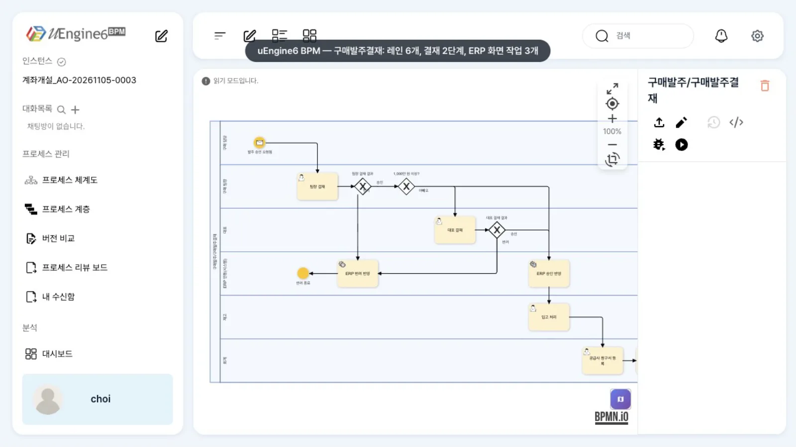
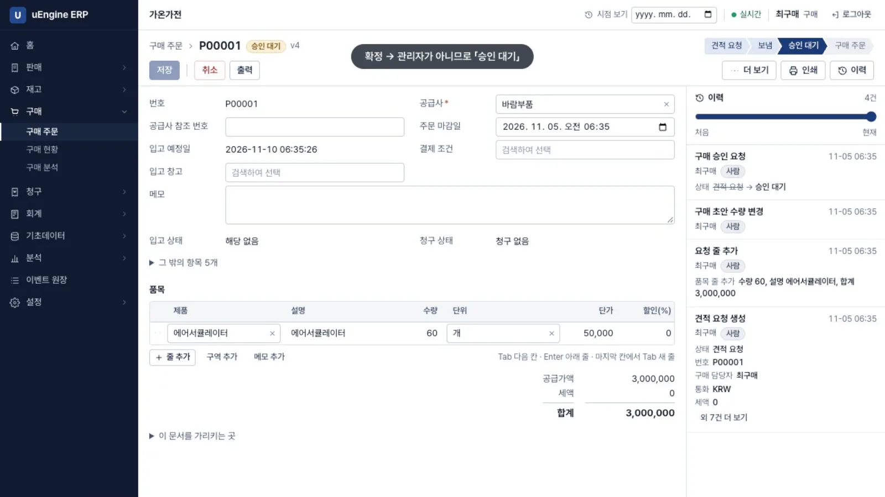
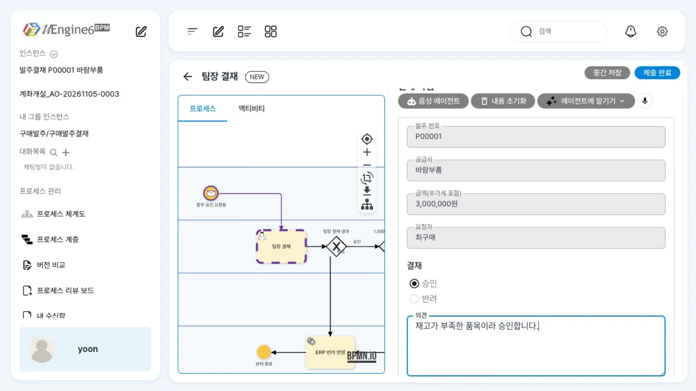
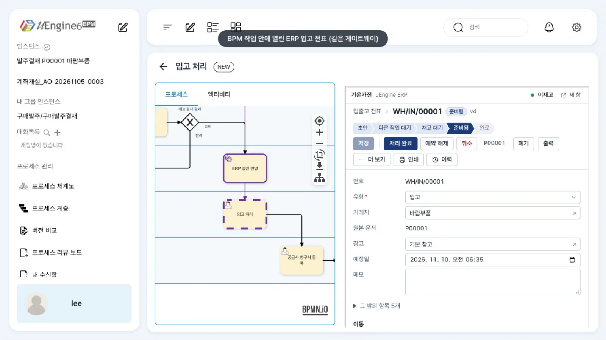
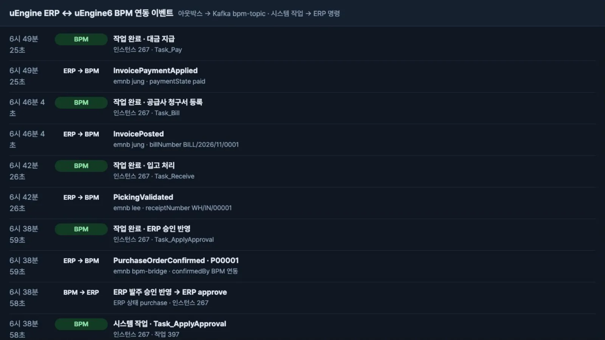

이벤트 소싱 ERP(uEngine ERP)의 이벤트로 BPM 프로세스를 시작하고, 결재는 BPM 폼에서, 입고·청구서·지급은 BPM 작업 안에 뜬 ERP 화면에서 처리합니다. 두 시스템은 Kafka 이벤트로만 만납니다.
무엇을 · 왜#
ERP는 거래를 기록하는 시스템입니다. 누가 결재하는지, 금액에 따라 결재선이 어떻게 달라지는지, 다음 일을 누가 맡을지는 회사마다 다르고 자주 바뀝니다. 그 흐름을 BPM에 두면 ERP를 고치지 않고 결재선을 바꿀 수 있습니다. 업무함·감사 기록·되돌리기도 한곳에서 씁니다.
| 무엇 | 누가 맡나 |
|---|---|
| 발주서·입고·청구서·지급의 기록과 규칙(수량·금액·상태·권한) | ERP. BPM은 ERP의 표를 읽지도 쓰지도 않습니다 |
| 결재선(팀장 → 1,000만 원 이상이면 대표), 담당자 업무함, 진행 기록 | BPM |
| 둘 사이의 메시지 | ERP 플러그인(아웃박스) + 브리지 + Kafka |
가상 회사 「가온가전」(uEngine ERP 튜토리얼과 같은 회사)의 다섯 사람이 등장합니다.
| 사람 | BPM 그룹 · 역할 | 하는 일 |
|---|---|---|
| 최구매 | 구매팀 · purchase | ERP에서 발주서를 쓰고 확정 |
| 윤팀장 | 구매결재 · purchase-lead | 팀장 결재(BPM 폼) |
| 김대표 | 경영진 · ceo | 1,000만 원 이상 결재(BPM 폼) |
| 이재고 | 물류팀 · warehouse | 입고 처리(BPM 작업 안의 ERP 입고 전표) |
| 정회계 | 회계팀 · accounting | 공급사 청구서·대금 지급(BPM 작업 안의 ERP 화면) |
먼저 알아 둘 것
- 화면과 수치는 로컬 스택(uEngine6
bmt/sds-process-test브랜치, uEngine ERPfeat/bpm-integration)을 가상 회사 데이터로 실행해 얻었습니다. - 이 브랜치에서 예제를 만들면서 확인한 엔진·프런트 결함 8건과 우회 방법은 예제 저장소의
docs/INTEGRATION.md9절에 있습니다. 예제 저장소bpm-sample-app-erp는 공개 준비 중이며, 공개되면 이 자리에 링크를 둡니다. 업무 목록의 「선점」은 시연 스택에서 프런트 패치와 설정 하나(esb.inbound-unwrap.enabled: true)로 고친 뒤 촬영했습니다. - 사용자 비밀번호(
gaon-1234)는 로컬 시연용입니다.
구성#
ERP(Supabase) ─ 구독 handler ─▶ erp_bpm.outbox ─▶ 브리지 ─▶ Kafka bpm-topic ─▶ uEngine6 process-service
▲ │ (헤더 type · corrKey · emnb)
└──────── ERP 명령(승인·취소, 멱등 키) ◀──────── 브리지가 bpm-bridge 의 할 일 목록을 읽음(외부 작업)
브라우저 ─▶ keycloak-gateway(:8288) ─┬─ /** → uEngine6 화면
└─ /erp/** → ERP 웹(같은 출처라 BPM 작업 안 iframe 으로 열림)
- ERP → BPM: ERP 플러그인
bpm_link가 이벤트를 구독해 BPM 메시지를 같은 DB 트랜잭션 안에서 아웃박스에 쌓습니다. 브리지가 순서대로 Kafka로 보냅니다. - BPM → ERP: 「ERP 승인 반영」「ERP 반려 반영」은 연동 계정
bpm-bridge앞으로 생기는 작업입니다. 브리지가 그 할 일 목록을 읽어 ERP 명령을 실행하고, ERP가 낸 결과 이벤트가 그 작업을 끝냅니다(Camunda의 external task와 같은 개념). - 화면: ERP 웹을 BPM과 같은 게이트웨이 뒤(
/erp/**)에 붙입니다. ERP는 같은 출처의 iframe 안에서 메뉴 없는 임베드 모드가 됩니다.
따라 하기#
- 프로세스 보기. BPM에서
구매발주/구매발주결재를 엽니다. 레인 6개(구매 담당·구매 팀장·대표·ERP 연동·재고·회계), 결재 2단계, 시스템 작업 2개, ERP 화면 작업 3개입니다.
구매발주결재 프로세스 - 발주 확정(ERP). 최구매로 ERP(
/erp/)에 로그인해 견적 요청을 씁니다. 공급사바람부품, 에어서큘레이터 60대(3,000,000원)입니다. 확정을 누르면 최구매는 관리자가 아니어서 발주서가 승인 대기가 됩니다.
승인 대기 - 이벤트가 BPM으로. ERP가
PurchaseOrderApprovalRequested를 남기고, 브리지 화면(/erp-bridge/)에ERP → BPM줄이 나타납니다. BPM은 이 이벤트로 인스턴스발주결재 P00001 바람부품을 시작합니다. - 팀장 결재(BPM). 윤팀장의 업무 목록에 팀장 결재가 옵니다. 구매결재 그룹에서 팀장 역할을 가진 사람에게만 보입니다. 카드의 체크 상자를 고르고 선택 1건 선점을 누른 뒤 카드를 엽니다. 폼에는 발주 번호·공급사·금액·요청자가 미리 채워져 있습니다. 승인을 고르고 의견을 적어 제출 완료를 누릅니다.

팀장 결재 폼 - ERP에 승인 반영(시스템 작업). 1,000만 원 미만이라 대표 결재 없이 ERP 승인 반영으로 갑니다. 브리지가 ERP에
approve를 보내고, ERP의PurchaseOrderConfirmed가 돌아와 이 작업을 끝냅니다. ERP의 발주서는 확정되고 입고 전표가 생깁니다. - 입고(BPM 작업 안의 ERP 화면). 이재고가 입고 처리를 선점해 엽니다. 오른쪽에 ERP 입고 전표
WH/IN/00001이 그대로 뜹니다. 처리 완료를 누르면 ERP의PickingValidated가 BPM 작업을 끝냅니다.
BPM 작업 안의 ERP 입고 전표 - 공급사 청구서. 정회계가 공급사 청구서 등록을 엽니다. ERP 발주서에서 청구서 만들기를 누르고 청구일을 넣어 게시합니다.
InvoicePosted가 이 작업을 끝내고 대금 지급이 생깁니다. - 대금 지급. 대금 지급을 열면 그 청구서가 뜹니다. 지급 등록을 확인하면
InvoicePaymentApplied가 마지막 작업을 끝내고 인스턴스가 지급 완료로 끝납니다.
연동 이벤트 - 대표 결재와 반려. 한결전자부품에 제습기 70대(1,260만 원)로 같은 절차를 진행하면, 윤팀장 승인 뒤 대표 결재가 김대표에게 갑니다. 김대표가 반려하면 ERP 반려 반영에서 브리지가 ERP 발주서를 취소하고, 프로세스는 반려 종료로 끝납니다. ERP 이력에는
BPM 연동이 취소한 것으로 남습니다.
영상으로 더 보기#
9단계 「대표 결재와 반려」를 따로 촬영한 영상입니다. 반려가 ERP 발주 취소로 이어지고, ERP 이력에 연동 계정이 남는 것까지 확인합니다.
어떻게 설정했나#
메시지 계약#
ERP 이벤트 (Kafka 헤더 type) |
BPM에서 | payload(모두 프로세스 변수가 됨) |
|---|---|---|
PurchaseOrderApprovalRequested |
메시지 시작 이벤트 | poId, poNumber, vendorName, amountTotal(정수), amountText, requestedBy |
PurchaseOrderConfirmed · PurchaseOrderCancelled |
시스템 작업 완료 | poNumber, confirmedBy · cancelledBy |
PickingValidated · InvoicePosted · InvoicePaymentApplied |
ERP 화면 작업 완료 | receiptNumber · billId, billNumber · paymentState, amountPaid |
헤더 corrKey와 payload 첫 필드 poId는 발주서 id이고, 인스턴스의 상관 키입니다. 헤더 emnb는 그 일을 한 사람입니다.
사람 작업을 이벤트로 끝낼 때 엔진은 그 작업을 선점한 사람과 emnb가 같은지 봅니다. 그래서 이재고·정회계는 ERP에서 처리하기 전에 BPM 작업을 선점합니다.
레인 — 그룹 + 역할 + 경합#
{"roleResolutionContext": {"_type": "org.uengine.five.overriding.IAMRoleResolutionContext",
"groupName": "구매결재", "scope": "purchase-lead"},
"dispatchingOption": 1}
작업은 담당자 없이 생기고, 그 그룹·역할을 가진 사람의 업무 목록에 보이며, 한 사람이 선점하면 그 사람의 작업이 됩니다.
결재 폼 — 미리 채우기(in)와 결과 받기(out)#
{"_type": "org.uengine.kernel.FormActivity", "tool": "formHandler:발주결재_팀장",
"variableForHtmlFormContext": {"name": "발주결재_팀장"},
"eventSynchronization": {"eventType": "", "attributes": [], "mappingContext": {"mappingElements": [
{"argument": {"text": "발주결재_팀장.poNumber"}, "direction": "in", "variable": {"name": "poNumber"}},
{"argument": {"text": "leadDecision"}, "direction": "out", "variable": {"name": "[Arguments].decision"}}]}}}
ERP 화면 작업과 시스템 작업#
{"_type": "org.uengine.kernel.URLActivity",
"url": "http://localhost:8288/erp/#/by-origin/picking/<%instance.corrkey%>",
"eventSynchronizations": [{"eventType": "PickingValidated",
"attributes": [{"name": "poId", "className": "String", "isKey": true, "isCorrKey": true}]}]}
시스템 작업은 같은 eventSynchronizations를 설정한 사람 작업(HumanActivity)이고, 레인이 DirectRoleResolutionContext로 bpm-bridge를 가리킵니다.
게이트웨이 라우트#
- id: erp-web
uri: http://localhost:5302 # ERP web 정적 빌드
predicates:
- Path=/erp, /erp/** # 프런트 catch-all(/**) 보다 앞에
확인 문제#
이재고가 BPM 작업을 선점하지 않고 ERP에서 바로 입고를 처리하면 어떻게 되나요?
ERP는 입고를 처리하고 이벤트를 냅니다. 하지만 BPM은 「입고 처리」 작업을 선점한 사람이 없어 그 이벤트로 작업을 끝내지 않습니다(Work item must be claimed before completion). 작업을 선점한 뒤 ERP에서 다시 확인하면 됩니다.
브리지가 같은 시스템 작업을 두 번 처리하면 ERP 발주가 두 번 승인되나요?
아닙니다. 브리지는 bpm:<인스턴스>:<작업>을 ERP 명령의 멱등 키로 보내므로 두 번째 명령은 반영되지 않고, 결과 이벤트도 처음 한 번만 나갑니다.
결재선을 「500만 원 이상이면 대표」로 바꾸려면 ERP를 고쳐야 하나요?
아닙니다. BPM 게이트웨이의 조건(amountTotal >= 10000000)만 바꿔 배포합니다. ERP는 승인 요청과 승인 명령만 압니다.